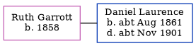

Ruth Laurence (née Garrott) 1858 -
[ Home ] | [ Calendar ] | [ Surnames Index ] | [ Errors ] | [ Family History ]Ruth Garrott, the wife of Daniel Laurence (the great-great-uncle of Nigel Horne), was born in Bedfordshire, England in 18581. She married Daniel (a general labourer) in Thanet, Kent, England around May 18822.
During her life, she was living at Chapel Road, St Lawrence in Thanet in 18911 and on 5 Apr 18911.
Citations
- 1891 England, Wales & Scotland Census - Findmypast (was age 33 and the wife of the head of the household)
- England & Wales marriages 1837-2008 - Findmypast
Media
1901 England, Wales & Scotland Census Transcription - GBC-1901-0007458130
Family Tree
Map
Generated by ged2site. Last updated on Jul 3, 2024